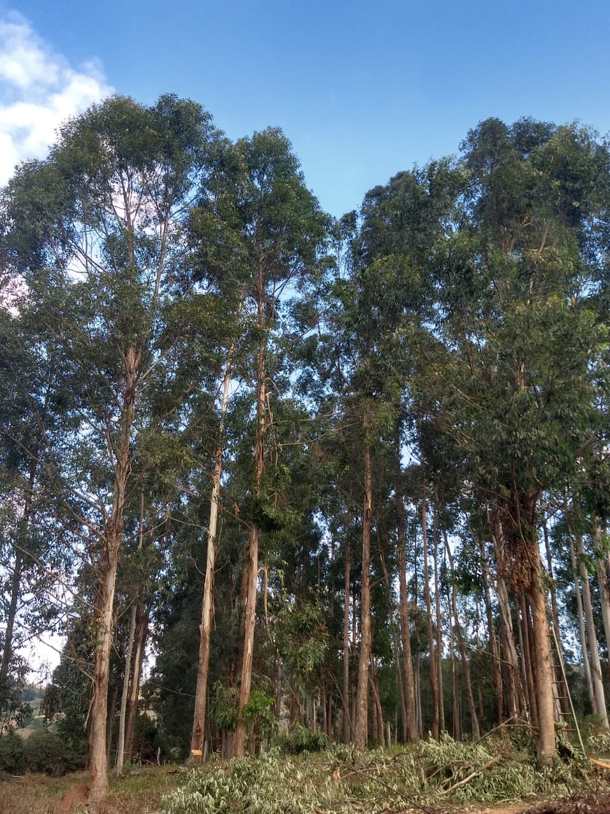

|  | ||
| Mourões são utilizados para fazer cerca. Recomendado para construção de cural. | Réguas são utilizadas juntamente de mourões para montar cerca. Geralmente, utilizado para cercar gado. | Eucaliptos é a obra prima principal das peças de madeira. É vendido por unidade ou cortado de acordo com o pedido do cliente. |